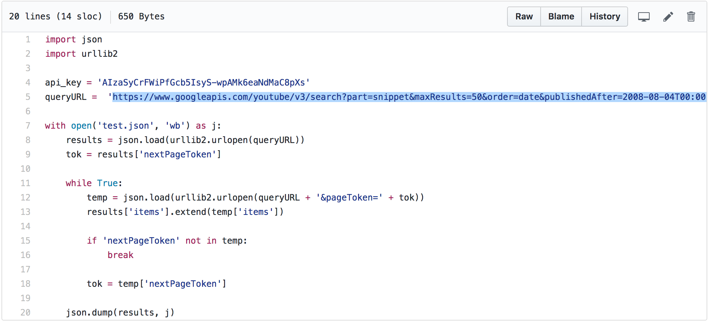
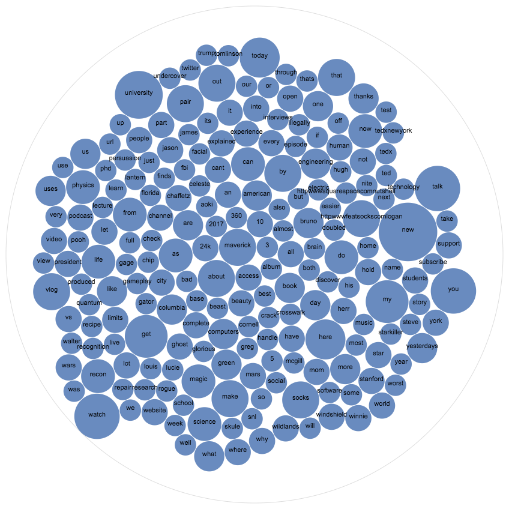
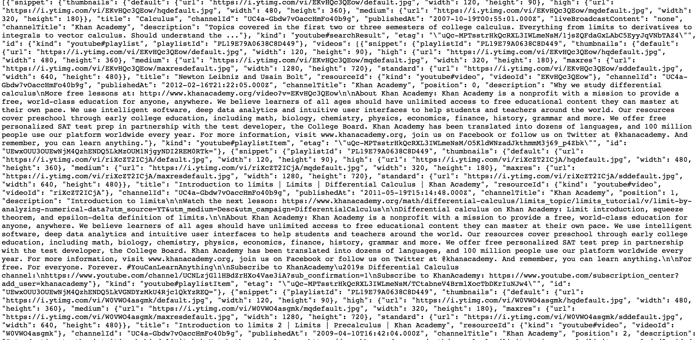
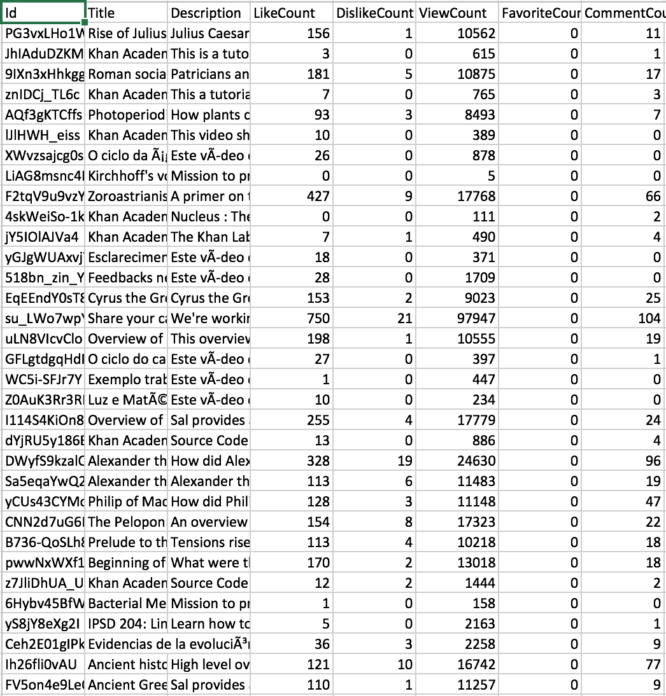
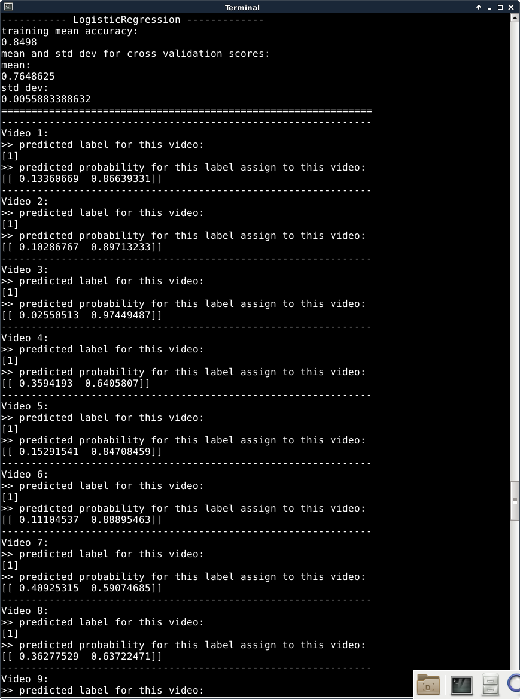
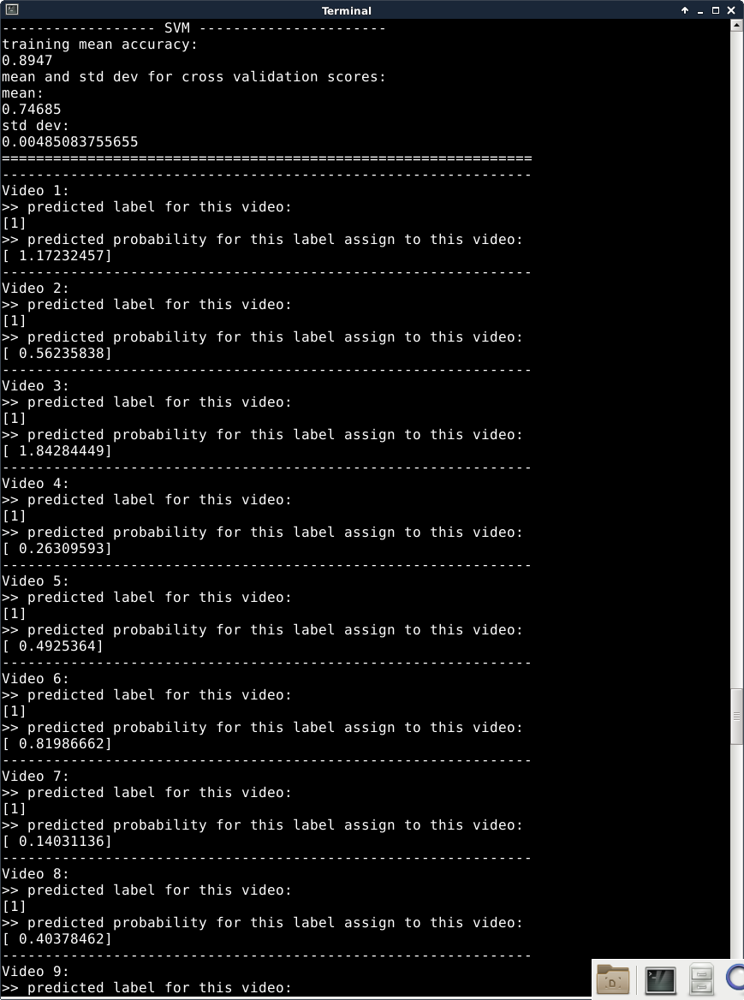

Progress Thus Far
Author: Aaron Wu (pwu8), Abhishek Dutta (adutta2), Natalie Roe (nroe), Preston Law (plaw), Wennie Zhang (yzhang46) (We're a team of five! Confirmed by HTA)
What We've Accomplished
At this point, in our final project, we've created a python script to extract and clean our data from YouTube. Below is an image of part of our code that grabbed the data from the API.
The data that we grabbed pertained to the top videos on YouTube at the time we ran our data. "Top" was defined by the videos' likes to dislikes ratio. From our data, we created a visualization representing the most popular terms in the top videos on YouTube. The terms were sourced from each videos' title, tags, and description.
Afterwards, we extracted data from 4 specific channels on YouTube: Khan Standard Playlists, Khan Medicine Playlists, Khan College Admissions Playlists, and Khan SAT Playlists. We wrote a specific script to extract and clean data from those playlists. Below is an image of our data from Khan Standard Playlists:
After cleaning the data, we created a file that lists each video id, title, like count, dislike count, views, favourite count, and number of comments. Below is a snapshot of the information for a subset of the data that we collected from the channel:
We then transformed the data to represent the properties for every single video with the following features [x is R^8 dimension],
(['Id', 'Title', 'Description', 'LikeCount', 'DislikeCount', 'ViewCount', 'FavoriteCount', 'CommentCount']).
On our feature set, we performed sentimental analysis (positive + / negative -) based on
Machine Learning classification models.
The classification models we used were Bernoulli Naive Bayes, Linear Regression, Logistic Regression, Support Vector Machine.
In the shot result of the terminal,
[0] -> stands for postive+;
[1] -> stands for negative-
Based on machine learning model analysis on these data, we could generated vast majority of info, and we could ultilize them in some creative ways,
For instance,
predicting a likely label before a user clicks it. If the predicted label is (-1) negative based on Liked, Disliked, Comments,
and our model says we got >85% probability it's negative(-1), then we would pop up an important notice it channel may contain harmful info and make you feel uncomfable.
Simiarily,
if our model says we got >99.5% probability it's negative(-1), then we would probably block this video in this channel, especially for the those users below 18 year-old (children), etc.
In addition, We will be continuing to process, analyze, and create visualizations with more data. And We will also be working on developing the web application
portion of the project so that users will be able to use our findings to identify trends on YouTube.
Classifier 1
Bernoulli Naive Bayes
Classifier 2
Logistic Regression
Classifier 3
Support Vector Machine
Conclusion and analysis based on ML
Based on machine learning model analysis on these data, we could generated vast majority of info, and we could ultilize them in some creative ways,
For instance,
predicting a likely label before a user clicks it. If the predicted label is (-1) negative based on Liked, Disliked, Comments,
and our model says we got >85% probability it's negative(-1), then we would pop up an important notice it channel may contain harmful info and make you feel uncomfable.
Simiarily,
if our model says we got >99.5% probability it's negative(-1), then we would probably block this video in this channel, especially for the those users below 18 year-old (children), etc.
In addition, We will be continuing to process, analyze, and create visualizations with more data. And We will also be working on developing the web application
portion of the project so that users will be able to use our findings to identify trends on YouTube.
April 6, 2017
* For the limitation of screenshot's length on department machine, the full results are as follows: *
Classifier 1
----------- Naive Bayes, Bernoulli --------- training mean accuracy: 0.8295125 mean and std dev for cross validation scores: mean: 0.755 std dev: 0.00643015357515 ============================================================== -------------------------------------------------------------- Video 1: >> predicted label for this video: [1] >> predicted probability for this label assign to this video: [[ 0.11260559 0.88739441]] -------------------------------------------------------------- Video 2: >> predicted label for this video: [1] >> predicted probability for this label assign to this video: [[ 0.00560106 0.99439894]] -------------------------------------------------------------- Video 3: >> predicted label for this video: [1] >> predicted probability for this label assign to this video: [[ 0.00290388 0.99709612]] -------------------------------------------------------------- Video 4: >> predicted label for this video: [1] >> predicted probability for this label assign to this video: [[ 0.31901708 0.68098292]] -------------------------------------------------------------- Video 5: >> predicted label for this video: [1] >> predicted probability for this label assign to this video: [[ 0.18664652 0.81335348]] -------------------------------------------------------------- Video 6: >> predicted label for this video: [1] >> predicted probability for this label assign to this video: [[ 0.14130879 0.85869121]] -------------------------------------------------------------- Video 7: >> predicted label for this video: [1] >> predicted probability for this label assign to this video: [[ 0.19696204 0.80303796]] -------------------------------------------------------------- Video 8: >> predicted label for this video: [1] >> predicted probability for this label assign to this video: [[ 0.406529 0.593471]] -------------------------------------------------------------- Video 9: >> predicted label for this video: [1] >> predicted probability for this label assign to this video: [[ 0.31890769 0.68109231]] -------------------------------------------------------------- Video 10: >> predicted label for this video: [0] >> predicted probability for this label assign to this video: [[ 0.74345804 0.25654196]] -------------------------------------------------------------- Video 11: >> predicted label for this video: [0] >> predicted probability for this label assign to this video: [[ 0.54572662 0.45427338]] -------------------------------------------------------------- Video 12: >> predicted label for this video: [0] >> predicted probability for this label assign to this video: [[ 0.72050322 0.27949678]] -------------------------------------------------------------- Video 13: >> predicted label for this video: [1] >> predicted probability for this label assign to this video: [[ 0.18932438 0.81067562]] -------------------------------------------------------------- Video 14: >> predicted label for this video: [1] >> predicted probability for this label assign to this video: [[ 0.2233634 0.7766366]] -------------------------------------------------------------- Video 15: >> predicted label for this video: [1] >> predicted probability for this label assign to this video: [[ 0.3006824 0.6993176]] -------------------------------------------------------------- Video 16: >> predicted label for this video: [1] >> predicted probability for this label assign to this video: [[ 0.23589132 0.76410868]] -------------------------------------------------------------- Video 17: >> predicted label for this video: [1] >> predicted probability for this label assign to this video: [[ 0.18230234 0.81769766]] -------------------------------------------------------------- Video 18: >> predicted label for this video: [1] >> predicted probability for this label assign to this video: [[ 0.19447912 0.80552088]] -------------------------------------------------------------- Video 19: >> predicted label for this video: [1] >> predicted probability for this label assign to this video: [[ 0.08422374 0.91577626]] -------------------------------------------------------------- Video 20: >> predicted label for this video: [1] >> predicted probability for this label assign to this video: [[ 0.31807239 0.68192761]] -------------------------------------------------------------- Video 21: >> predicted label for this video: [1] >> predicted probability for this label assign to this video: [[ 0.11138242 0.88861758]] -------------------------------------------------------------- Video 22: >> predicted label for this video: [1] >> predicted probability for this label assign to this video: [[ 0.13012721 0.86987279]] -------------------------------------------------------------- Video 23: >> predicted label for this video: [1] >> predicted probability for this label assign to this video: [[ 0.09394665 0.90605335]] -------------------------------------------------------------- Video 24: >> predicted label for this video: [1] >> predicted probability for this label assign to this video: [[ 0.11689436 0.88310564]] -------------------------------------------------------------- Video 25: >> predicted label for this video: [0] >> predicted probability for this label assign to this video: [[ 0.81486076 0.18513924]] -------------------------------------------------------------- Video 26: >> predicted label for this video: [1] >> predicted probability for this label assign to this video: [[ 0.12933486 0.87066514]] -------------------------------------------------------------- Video 27: >> predicted label for this video: [0] >> predicted probability for this label assign to this video: [[ 0.52968991 0.47031009]] -------------------------------------------------------------- Video 28: >> predicted label for this video: [1] >> predicted probability for this label assign to this video: [[ 0.11138242 0.88861758]] -------------------------------------------------------------- Video 29: >> predicted label for this video: [1] >> predicted probability for this label assign to this video: [[ 0.406529 0.593471]] -------------------------------------------------------------- Video 30: >> predicted label for this video: [0] >> predicted probability for this label assign to this video: [[ 0.94621964 0.05378036]] -------------------------------------------------------------- Video 31: >> predicted label for this video: [1] >> predicted probability for this label assign to this video: [[ 0.46897564 0.53102436]] -------------------------------------------------------------- Video 32: >> predicted label for this video: [1] >> predicted probability for this label assign to this video: [[ 0.4134813 0.5865187]] -------------------------------------------------------------- Video 33: >> predicted label for this video: [0] >> predicted probability for this label assign to this video: [[ 0.5700762 0.4299238]] -------------------------------------------------------------- Video 34: >> predicted label for this video: [1] >> predicted probability for this label assign to this video: [[ 0.02704855 0.97295145]] -------------------------------------------------------------- Video 35: >> predicted label for this video: [1] >> predicted probability for this label assign to this video: [[ 0.30027051 0.69972949]] -------------------------------------------------------------- Video 36: >> predicted label for this video: [1] >> predicted probability for this label assign to this video: [[ 0.15215293 0.84784707]] -------------------------------------------------------------- Video 37: >> predicted label for this video: [1] >> predicted probability for this label assign to this video: [[ 0.18047264 0.81952736]] -------------------------------------------------------------- Video 38: >> predicted label for this video: [1] >> predicted probability for this label assign to this video: [[ 0.11525736 0.88474264]] -------------------------------------------------------------- Video 39: >> predicted label for this video: [1] >> predicted probability for this label assign to this video: [[ 0.06627049 0.93372951]] -------------------------------------------------------------- Video 40: >> predicted label for this video: [1] >> predicted probability for this label assign to this video: [[ 0.46897564 0.53102436]] -------------------------------------------------------------- Video 41: >> predicted label for this video: [1] >> predicted probability for this label assign to this video: [[ 0.46897564 0.53102436]] -------------------------------------------------------------- Video 42: >> predicted label for this video: [1] >> predicted probability for this label assign to this video: [[ 0.01123935 0.98876065]] -------------------------------------------------------------- Video 43: >> predicted label for this video: [1] >> predicted probability for this label assign to this video: [[ 0.07062582 0.92937418]] -------------------------------------------------------------- Video 44: >> predicted label for this video: [0] >> predicted probability for this label assign to this video: [[ 0.8854158 0.1145842]] -------------------------------------------------------------- Video 45: >> predicted label for this video: [1] >> predicted probability for this label assign to this video: [[ 0.10394983 0.89605017]] -------------------------------------------------------------- Video 46: >> predicted label for this video: [1] >> predicted probability for this label assign to this video: [[ 0.05470105 0.94529895]] -------------------------------------------------------------- Video 47: >> predicted label for this video: [1] >> predicted probability for this label assign to this video: [[ 0.32064853 0.67935147]] -------------------------------------------------------------- Video 48: >> predicted label for this video: [0] >> predicted probability for this label assign to this video: [[ 0.50276359 0.49723641]] -------------------------------------------------------------- Video 49: >> predicted label for this video: [1] >> predicted probability for this label assign to this video: [[ 0.46897564 0.53102436]] -------------------------------------------------------------- Video 50: >> predicted label for this video: [1] >> predicted probability for this label assign to this video: [[ 0.46897564 0.53102436]] --------------------------------------------------------------Classifier 2
----------- LogisticRegression ------------- training mean accuracy: 0.8498 mean and std dev for cross validation scores: mean: 0.7648625 std dev: 0.0055883388632 ============================================================== -------------------------------------------------------------- Video 1: >> predicted label for this video: [1] >> predicted probability for this label assign to this video: [[ 0.13359099 0.86640901]] -------------------------------------------------------------- Video 2: >> predicted label for this video: [1] >> predicted probability for this label assign to this video: [[ 0.10285371 0.89714629]] -------------------------------------------------------------- Video 3: >> predicted label for this video: [1] >> predicted probability for this label assign to this video: [[ 0.02550152 0.97449848]] -------------------------------------------------------------- Video 4: >> predicted label for this video: [1] >> predicted probability for this label assign to this video: [[ 0.35943077 0.64056923]] -------------------------------------------------------------- Video 5: >> predicted label for this video: [1] >> predicted probability for this label assign to this video: [[ 0.15291531 0.84708469]] -------------------------------------------------------------- Video 6: >> predicted label for this video: [1] >> predicted probability for this label assign to this video: [[ 0.11104131 0.88895869]] -------------------------------------------------------------- Video 7: >> predicted label for this video: [1] >> predicted probability for this label assign to this video: [[ 0.40926307 0.59073693]] -------------------------------------------------------------- Video 8: >> predicted label for this video: [1] >> predicted probability for this label assign to this video: [[ 0.36277347 0.63722653]] -------------------------------------------------------------- Video 9: >> predicted label for this video: [1] >> predicted probability for this label assign to this video: [[ 0.19732736 0.80267264]] -------------------------------------------------------------- Video 10: >> predicted label for this video: [0] >> predicted probability for this label assign to this video: [[ 0.58099942 0.41900058]] -------------------------------------------------------------- Video 11: >> predicted label for this video: [1] >> predicted probability for this label assign to this video: [[ 0.46247571 0.53752429]] -------------------------------------------------------------- Video 12: >> predicted label for this video: [0] >> predicted probability for this label assign to this video: [[ 0.65524777 0.34475223]] -------------------------------------------------------------- Video 13: >> predicted label for this video: [1] >> predicted probability for this label assign to this video: [[ 0.49770642 0.50229358]] -------------------------------------------------------------- Video 14: >> predicted label for this video: [1] >> predicted probability for this label assign to this video: [[ 0.13547512 0.86452488]] -------------------------------------------------------------- Video 15: >> predicted label for this video: [0] >> predicted probability for this label assign to this video: [[ 0.50686477 0.49313523]] -------------------------------------------------------------- Video 16: >> predicted label for this video: [1] >> predicted probability for this label assign to this video: [[ 0.11103591 0.88896409]] -------------------------------------------------------------- Video 17: >> predicted label for this video: [1] >> predicted probability for this label assign to this video: [[ 0.47635331 0.52364669]] -------------------------------------------------------------- Video 18: >> predicted label for this video: [1] >> predicted probability for this label assign to this video: [[ 0.28041656 0.71958344]] -------------------------------------------------------------- Video 19: >> predicted label for this video: [1] >> predicted probability for this label assign to this video: [[ 0.43090506 0.56909494]] -------------------------------------------------------------- Video 20: >> predicted label for this video: [1] >> predicted probability for this label assign to this video: [[ 0.17680154 0.82319846]] -------------------------------------------------------------- Video 21: >> predicted label for this video: [0] >> predicted probability for this label assign to this video: [[ 0.52004229 0.47995771]] -------------------------------------------------------------- Video 22: >> predicted label for this video: [1] >> predicted probability for this label assign to this video: [[ 0.09365312 0.90634688]] -------------------------------------------------------------- Video 23: >> predicted label for this video: [1] >> predicted probability for this label assign to this video: [[ 0.08392282 0.91607718]] -------------------------------------------------------------- Video 24: >> predicted label for this video: [1] >> predicted probability for this label assign to this video: [[ 0.08218549 0.91781451]] -------------------------------------------------------------- Video 25: >> predicted label for this video: [0] >> predicted probability for this label assign to this video: [[ 0.82316129 0.17683871]] -------------------------------------------------------------- Video 26: >> predicted label for this video: [1] >> predicted probability for this label assign to this video: [[ 0.16842775 0.83157225]] -------------------------------------------------------------- Video 27: >> predicted label for this video: [1] >> predicted probability for this label assign to this video: [[ 0.29855679 0.70144321]] -------------------------------------------------------------- Video 28: >> predicted label for this video: [0] >> predicted probability for this label assign to this video: [[ 0.52004229 0.47995771]] -------------------------------------------------------------- Video 29: >> predicted label for this video: [1] >> predicted probability for this label assign to this video: [[ 0.36277347 0.63722653]] -------------------------------------------------------------- Video 30: >> predicted label for this video: [0] >> predicted probability for this label assign to this video: [[ 0.71198425 0.28801575]] -------------------------------------------------------------- Video 31: >> predicted label for this video: [1] >> predicted probability for this label assign to this video: [[ 0.48724854 0.51275146]] -------------------------------------------------------------- Video 32: >> predicted label for this video: [1] >> predicted probability for this label assign to this video: [[ 0.03940756 0.96059244]] -------------------------------------------------------------- Video 33: >> predicted label for this video: [1] >> predicted probability for this label assign to this video: [[ 0.46592351 0.53407649]] -------------------------------------------------------------- Video 34: >> predicted label for this video: [1] >> predicted probability for this label assign to this video: [[ 0.18841222 0.81158778]] -------------------------------------------------------------- Video 35: >> predicted label for this video: [0] >> predicted probability for this label assign to this video: [[ 0.56522636 0.43477364]] -------------------------------------------------------------- Video 36: >> predicted label for this video: [0] >> predicted probability for this label assign to this video: [[ 0.53406384 0.46593616]] -------------------------------------------------------------- Video 37: >> predicted label for this video: [1] >> predicted probability for this label assign to this video: [[ 0.45503726 0.54496274]] -------------------------------------------------------------- Video 38: >> predicted label for this video: [1] >> predicted probability for this label assign to this video: [[ 0.36316131 0.63683869]] -------------------------------------------------------------- Video 39: >> predicted label for this video: [1] >> predicted probability for this label assign to this video: [[ 0.19414794 0.80585206]] -------------------------------------------------------------- Video 40: >> predicted label for this video: [1] >> predicted probability for this label assign to this video: [[ 0.48724854 0.51275146]] -------------------------------------------------------------- Video 41: >> predicted label for this video: [1] >> predicted probability for this label assign to this video: [[ 0.48724854 0.51275146]] -------------------------------------------------------------- Video 42: >> predicted label for this video: [1] >> predicted probability for this label assign to this video: [[ 0.1094155 0.8905845]] -------------------------------------------------------------- Video 43: >> predicted label for this video: [1] >> predicted probability for this label assign to this video: [[ 0.39390582 0.60609418]] -------------------------------------------------------------- Video 44: >> predicted label for this video: [0] >> predicted probability for this label assign to this video: [[ 0.91410231 0.08589769]] -------------------------------------------------------------- Video 45: >> predicted label for this video: [1] >> predicted probability for this label assign to this video: [[ 0.12120241 0.87879759]] -------------------------------------------------------------- Video 46: >> predicted label for this video: [1] >> predicted probability for this label assign to this video: [[ 0.07060719 0.92939281]] -------------------------------------------------------------- Video 47: >> predicted label for this video: [1] >> predicted probability for this label assign to this video: [[ 0.45608309 0.54391691]] -------------------------------------------------------------- Video 48: >> predicted label for this video: [1] >> predicted probability for this label assign to this video: [[ 0.42956516 0.57043484]] -------------------------------------------------------------- Video 49: >> predicted label for this video: [1] >> predicted probability for this label assign to this video: [[ 0.48724854 0.51275146]] -------------------------------------------------------------- Video 50: >> predicted label for this video: [1] >> predicted probability for this label assign to this video: [[ 0.48724854 0.51275146]] --------------------------------------------------------------Classifier 3
------------------ SVM ---------------------- training mean accuracy: 0.8947125 mean and std dev for cross validation scores: mean: 0.74685 std dev: 0.00491737989177 ============================================================== -------------------------------------------------------------- Video 1: >> predicted label for this video: [1] >> predicted probability for this label assign to this video: [ 1.17214906] -------------------------------------------------------------- Video 2: >> predicted label for this video: [1] >> predicted probability for this label assign to this video: [ 0.56192269] -------------------------------------------------------------- Video 3: >> predicted label for this video: [1] >> predicted probability for this label assign to this video: [ 1.84278608] -------------------------------------------------------------- Video 4: >> predicted label for this video: [1] >> predicted probability for this label assign to this video: [ 0.26308925] -------------------------------------------------------------- Video 5: >> predicted label for this video: [1] >> predicted probability for this label assign to this video: [ 0.49267279] -------------------------------------------------------------- Video 6: >> predicted label for this video: [1] >> predicted probability for this label assign to this video: [ 0.81982732] -------------------------------------------------------------- Video 7: >> predicted label for this video: [1] >> predicted probability for this label assign to this video: [ 0.14031487] -------------------------------------------------------------- Video 8: >> predicted label for this video: [1] >> predicted probability for this label assign to this video: [ 0.4036761] -------------------------------------------------------------- Video 9: >> predicted label for this video: [1] >> predicted probability for this label assign to this video: [ 1.4956285] -------------------------------------------------------------- Video 10: >> predicted label for this video: [0] >> predicted probability for this label assign to this video: [-0.48205753] -------------------------------------------------------------- Video 11: >> predicted label for this video: [0] >> predicted probability for this label assign to this video: [-0.40931014] -------------------------------------------------------------- Video 12: >> predicted label for this video: [0] >> predicted probability for this label assign to this video: [-0.53017746] -------------------------------------------------------------- Video 13: >> predicted label for this video: [0] >> predicted probability for this label assign to this video: [-0.13832706] -------------------------------------------------------------- Video 14: >> predicted label for this video: [1] >> predicted probability for this label assign to this video: [ 0.74232218] -------------------------------------------------------------- Video 15: >> predicted label for this video: [0] >> predicted probability for this label assign to this video: [-0.04627128] -------------------------------------------------------------- Video 16: >> predicted label for this video: [1] >> predicted probability for this label assign to this video: [ 1.53991599] -------------------------------------------------------------- Video 17: >> predicted label for this video: [0] >> predicted probability for this label assign to this video: [-0.29748252] -------------------------------------------------------------- Video 18: >> predicted label for this video: [1] >> predicted probability for this label assign to this video: [ 0.69984093] -------------------------------------------------------------- Video 19: >> predicted label for this video: [1] >> predicted probability for this label assign to this video: [ 0.0524058] -------------------------------------------------------------- Video 20: >> predicted label for this video: [1] >> predicted probability for this label assign to this video: [ 1.12840342] -------------------------------------------------------------- Video 21: >> predicted label for this video: [0] >> predicted probability for this label assign to this video: [-0.22811269] -------------------------------------------------------------- Video 22: >> predicted label for this video: [1] >> predicted probability for this label assign to this video: [ 1.54803971] -------------------------------------------------------------- Video 23: >> predicted label for this video: [1] >> predicted probability for this label assign to this video: [ 1.56885348] -------------------------------------------------------------- Video 24: >> predicted label for this video: [1] >> predicted probability for this label assign to this video: [ 1.37550411] -------------------------------------------------------------- Video 25: >> predicted label for this video: [0] >> predicted probability for this label assign to this video: [-0.61434488] -------------------------------------------------------------- Video 26: >> predicted label for this video: [1] >> predicted probability for this label assign to this video: [ 0.76192232] -------------------------------------------------------------- Video 27: >> predicted label for this video: [1] >> predicted probability for this label assign to this video: [ 0.90066597] -------------------------------------------------------------- Video 28: >> predicted label for this video: [0] >> predicted probability for this label assign to this video: [-0.22811269] -------------------------------------------------------------- Video 29: >> predicted label for this video: [1] >> predicted probability for this label assign to this video: [ 0.4036761] -------------------------------------------------------------- Video 30: >> predicted label for this video: [0] >> predicted probability for this label assign to this video: [-0.23845097] -------------------------------------------------------------- Video 31: >> predicted label for this video: [1] >> predicted probability for this label assign to this video: [ 0.01812744] -------------------------------------------------------------- Video 32: >> predicted label for this video: [1] >> predicted probability for this label assign to this video: [ 0.93581093] -------------------------------------------------------------- Video 33: >> predicted label for this video: [0] >> predicted probability for this label assign to this video: [-0.11384984] -------------------------------------------------------------- Video 34: >> predicted label for this video: [1] >> predicted probability for this label assign to this video: [ 1.01097513] -------------------------------------------------------------- Video 35: >> predicted label for this video: [0] >> predicted probability for this label assign to this video: [-0.70483938] -------------------------------------------------------------- Video 36: >> predicted label for this video: [0] >> predicted probability for this label assign to this video: [-0.36530158] -------------------------------------------------------------- Video 37: >> predicted label for this video: [1] >> predicted probability for this label assign to this video: [ 0.04838285] -------------------------------------------------------------- Video 38: >> predicted label for this video: [0] >> predicted probability for this label assign to this video: [-0.22058338] -------------------------------------------------------------- Video 39: >> predicted label for this video: [1] >> predicted probability for this label assign to this video: [ 0.49541079] -------------------------------------------------------------- Video 40: >> predicted label for this video: [1] >> predicted probability for this label assign to this video: [ 0.01812744] -------------------------------------------------------------- Video 41: >> predicted label for this video: [1] >> predicted probability for this label assign to this video: [ 0.01812744] -------------------------------------------------------------- Video 42: >> predicted label for this video: [1] >> predicted probability for this label assign to this video: [ 1.444242] -------------------------------------------------------------- Video 43: >> predicted label for this video: [1] >> predicted probability for this label assign to this video: [ 0.00525972] -------------------------------------------------------------- Video 44: >> predicted label for this video: [0] >> predicted probability for this label assign to this video: [-1.16267064] -------------------------------------------------------------- Video 45: >> predicted label for this video: [1] >> predicted probability for this label assign to this video: [ 1.23321637] -------------------------------------------------------------- Video 46: >> predicted label for this video: [1] >> predicted probability for this label assign to this video: [ 1.47037958] -------------------------------------------------------------- Video 47: >> predicted label for this video: [1] >> predicted probability for this label assign to this video: [ 0.11967828] -------------------------------------------------------------- Video 48: >> predicted label for this video: [1] >> predicted probability for this label assign to this video: [ 0.15041784] -------------------------------------------------------------- Video 49: >> predicted label for this video: [1] >> predicted probability for this label assign to this video: [ 0.01812744] -------------------------------------------------------------- Video 50: >> predicted label for this video: [1] >> predicted probability for this label assign to this video: [ 0.01812744] --------------------------------------------------------------
Home Page # is: here .